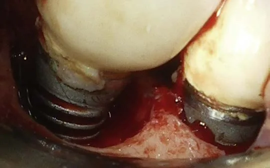
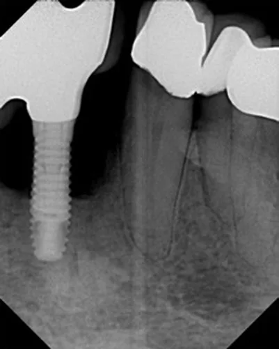

نسخه استخراجشده؛ ترجمه یا تأیید علمی انجام نشده است. وضعیت: captured
علتهای موکوزیت را مرور کن؛ یکی از آنها با بقیه فرق دارد:
«بیشتر موارد موکوزیت پریایمپلنت ناشی از بهداشت ضعیف دهان، ناتوانی در تمیز کردن ایمپلنت یا پروتز، موقعیت غیرایدهآل ایمپلنت، تطابق ضعیف پروتز، و سمان باقیمانده است.»
چهار مورد اول را میشناسی. سمان باقیمانده فرق دارد، چون مستقیماً محصول کار درمانگر است.
سازوکارش: «سمان باقیمانده بهعنوان کانونی برای تجمع و تکثیر باکتری عمل میکند.»
و چرا در ایمپلنت خطرناکتر است؟ پاسخ صریح است: «تکنیکهای سمانکردنی متعارف که بهطور معمول برای دندانهای طبیعی به کار میروند توصیه نمیشوند.»
دلیلش را از یونیت پیش میدانی: در دندان، اتصال بافت همبند به سمنتوم یک سد فیزیکی میسازد. در ایمپلنت این سد وجود ندارد و سمان میتواند تا عمق برود.
و عدد کلیدی این درس:
«در حاشیههایی که بیش از ۱٫۵ میلیمتر زیرلثهای هستند، حذف کامل سمان تقریباً غیرممکن است.»
«تقریباً غیرممکن». نه صرفاً دشوار — تقریباً غیرممکن.
و مشکل اینجاست: «حاشیههای رستوریشنهای ایمپلنت اغلب بیش از ۲ میلیمتر زیرلثهای قرار داده میشوند تا امرجنس پروفایل و زیبایی بهتری داشته باشند.»
یعنی همان تصمیمی که زیبایی را بهتر میکند، حذف کامل سمان را تقریباً ناممکن میکند. این یک معاوضهی واقعی است که باید آگاهانه گرفته شود، نه ناخودآگاه. راه بیرونرفت هم روشن است: حاشیهی همسطح لثه یا تا ۱ میلیمتر بالای آن، که برداشتن سمان را آسان میکند، یا پروتز پیچشونده که اصلاً سمانی ندارد.
محل تجمع سمان: سمان باقیمانده ممکن است به سه چیز بچسبد: (۱) کراون، (۲) اباتمنت، و (۳) استخوان.
و دربارهی محل تشخیص: «پس از سمانکردن رستوریشن، سمان اضافی باقیمانده بیشترین احتمال تشخیص را در نواحی بیندندانی دارد.» — پس اگر دنبال سمان میگردی، از اینترپروگزیمال شروع کن.
و انتخاب نوع سمان — یک راهکار ساده و مؤثر:
«سمانهای حاوی روی برای سمانکردن کراونهای ایمپلنت ایدهآل نشان داده شدهاند، چون آسانترین سمانها برای دیده شدن در رادیوگرافی هستند.»
یک تصمیم در لحظهی خرید مواد، که تشخیص را برای سالهای بعد ممکن میکند. در برابر، بسیاری از سمانهای بدون روی (مثل سمان رزینی و گلاسآینومر) در رادیوگرافی دیده نمیشوند، و سمان دارای جزء رزینی سختترین سمان برای برداشتن از سطح اباتمنت است.

این بخش یکی از امیدوارکنندهترین یافتههای کل ماژول را دارد.
«در موارد بیماری پریایمپلنت، تشخیص و حذف سمان اضافی بهطور مکرر (۷۶ درصد بیماران مبتلا) به رفع نشانههای التهابی بالینی در مدتی به کوتاهی یک ماه پس از درمان انجامیده است.»
سه عنصر این جمله را جدا کن:
• ۷۶ درصد بیماران — یعنی اکثریت روشن.
• رفع نشانههای التهابی — نه صرفاً بهبود.
• در مدتی به کوتاهی یک ماه — یعنی بسیار سریع.
پیام عملی این عدد بسیار مهم است: پیش از آنکه در یک ایمپلنت ملتهب به سراغ درمانهای پیچیده بروی، باید مطمئن شوی سمان باقیماندهای وجود ندارد. چون اگر داشته باشد، احتمال بالایی هست که تنها با حذف آن مسئله حل شود. فقط بدان که حذف کامل سمان با کورتاژ بسته بسیار دشوار است و در بسیاری از موارد به دسترسی جراحی (فلپ) نیاز دارد.
و به همین دلیل این کار اولویت دارد: «توانایی ارزیابی وجود سمان اضافی و سپس تعیین اینکه آیا حذف آن اندیکاسیون دارد، برای تسهیل پروتکلهای ترمیمی مناسب حیاتی است.»
و یک نکتهی نگرانکننده دربارهی زمان: یک گروه پژوهشی «تشخیص را از چند هفته تا ۴ سال پس از سمانکردن گزارش کردند.»
چهار سال. یعنی سمان میتواند سالها آنجا بماند و آرامآرام کار کند، پیش از آنکه کسی متوجه شود. و این توضیح میدهد چرا در هر ایمپلنت با علائم دیرهنگام باید به سمان هم مشکوک بود، حتی اگر پروتز سالها پیش تحویل شده باشد.
و یک یافته که یک باور رایج را رد میکند:
«حضور احتباس سمان و التهاب وابسته به نوع سطح ایمپلنت نبود؛ سطوح پلاسما-اسپری تیتانیوم یا اسید-اچشده با ذرات درشت شنپاشیشده و سطوح دیاکسید تیتانیوم-بلاستشده همگی [درگیر بودند].»
یعنی هیچ سطحی از این عارضه مصون نیست. انتخاب سیستم ایمپلنت، از این مسئولیت معاف نمیکند.
پیشگیری — و چرا «بیشتر بهتر نیست»:
«پر کردن بیشازحد یا پوشش کامل تمام سطوح داخلی کراون، به پرهیز از بیرونزدگی سمان کمک نمیکند.»
یک اشتباه شهودی: بسیاری فکر میکنند سمان بیشتر یعنی گیر بهتر. ولی سمان اضافی جایی برای رفتن ندارد جز به زیر لثه. پس سمان را فقط روی لبهی سطح داخلی کراون بگذار.
و عوامل دیگری هم سمانکردن ایدهآل را پیچیده میکنند: «خواص جریان سمان، ویسکوزیته، پایداری ابعادی، و ترشوندگی سطوح.»
جمعبندی این درس: این علتی است که بیش از هر علت دیگری در کنترل توست — از انتخاب نوع سمان (رویدار برای دیده شدن)، تا عمق حاشیه (زیر ۱٫۵ میلیمتر)، تا مقدار سمان (نه پر کردن کامل)، تا بازرسی اینترپروگزیمال پس از سمانکردن.
